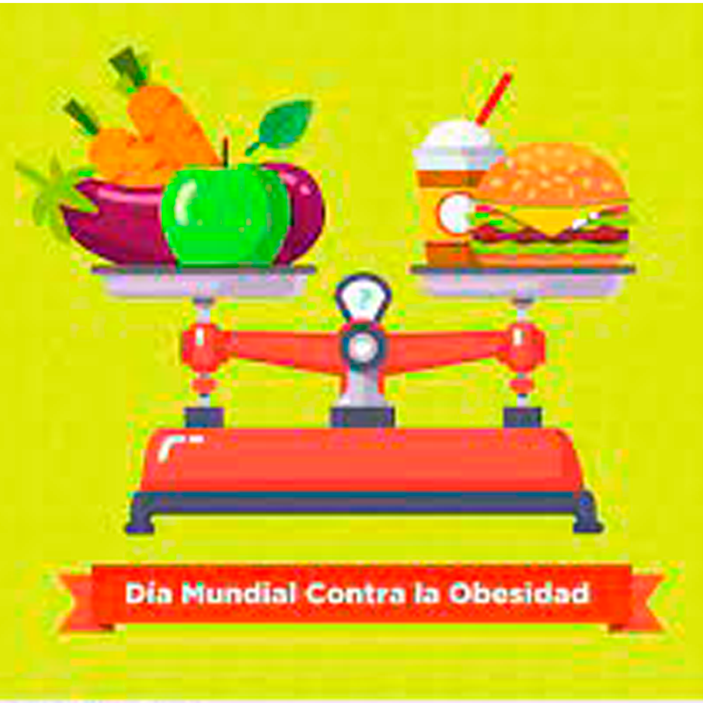

En México, el sobrepeso y la obesidad afectan a más del 75 por ciento de las personas adultas y al
35.6 por ciento de la población infantil, de acuerdo con datos de la Encuesta Nacional de Salud y
Nutrición (Ensanut) 2018-2019. Estas cifras han llevado a que nuestro país se ubique en primer lugar
a nivel mundial en obesidad infantil y el segundo en adultos, superado solamente por Estados Unidos

Esta enfermedad es considerada un problema de salud pública, la cual ha adquirido las proporciones
de una epidemia.
De acuerdo con la OMS, 800 millones de personas en el mundo viven con obesidad.
Se estima que para el 2030, se alcancen 250 millones de casos, debido al incremento en la
obesidad infantil